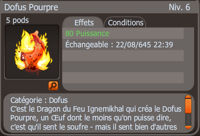

- Description : C’est le Dragon du Feu Ignemikhal qui créa le Dofus Pourpre, un Œuf dont le moins qu’on puisse dire, c’est qu’il sent le soufre - mais il sent bien d’autres choses encore…
- Niveau : 110
- Effets : 80 puissance
- Effet passif : Pour chaque attaque à distance reçue, les dommages finaux occasionnés sont augmentés de 1% pendant 1 tour. Les effets peuvent se cumuler 10 fois.
- Obtention : Récompense de la série de quête du succès "Pourpre Profond"